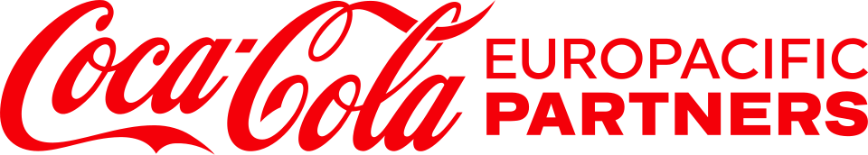

Coca-Cola Europacific Partners
Coca-Cola Europacific Partners는 여러 국가에서 음료를 제조·유통·판매하며 순매출 기준 세계 최대 독립 Coca-Cola 보틀러로 평가되는 다국적 기업이다.
최종 업데이트

Coca-Cola Europacific Partners는 어떤 브랜드인가
이 회사는 유럽, 호주, 태평양 지역, 인도네시아, 필리핀을 포함한 세계 31개 시장에서 보틀링 사업을 운영한다. 글로벌 음료 브랜드와 지역 브랜드로 구성된 제품군을 현지에서 생산하고 유통하며 판매한다.
판매 음료의 90% 이상은 소비되는 국가에서 생산한다. London Stock Exchange에 상장돼 FTSE 100 Index에 포함되며 미국 Nasdaq에서도 거래된다.
주식은 Euronext Amsterdam과 Spanish Stock Exchange에서도 거래할 수 있다.
Coca-Cola Europacific Partners는 어떻게 시작되고 성장했나
이 회사의 설립 정보는 2015년으로 기록돼 있으며, 2016년 5월 Coca-Cola European Partners라는 이름으로 사업 결합을 통해 출범했다. 결합에는 서유럽에서 The Coca-Cola Company의 주요 보틀링 기업이던 Coca-Cola Enterprises, Coca-Cola Iberian Partners S.A.U., Coca-Cola Erfrischungsgetränke GmbH가 참여했다.
2019년 3월 London Stock Exchange에 처음 상장했다. 2021년 Coca-Cola Amatil을 인수한 뒤 현재의 이름으로 변경했다.
Coca-Cola Europacific Partners의 브랜드 아이덴티티는 무엇인가
다수 시장에서 Coca-Cola 계열과 지역 음료 브랜드를 현지 생산·유통하는 세계 최대 독립 보틀러라는 점이 구별점이다.
Coca-Cola Europacific Partners의 대표 제품과 서비스는 무엇인가
Coca-Cola Europacific Partners는 지금 어떤 상태인가
이 회사는 영국에 본사를 둔 상장기업이며 2024년 매출은 €20.4 billion이다. 2025년 기준 세계 31개 시장과 85개 생산시설을 운영한다.
2024년 완료된 Coca-Cola Beverages Philippines 공동 인수에서는 60% 지분을 보유하고 Aboitiz Equity Ventures가 나머지 40%를 보유한다.
Coca-Cola Europacific Partners 로고는 어떻게 변해왔나
자주 묻는 질문
Coca-Cola Europacific Partners는 어느 나라 브랜드인가요?
Coca-Cola Europacific Partners는 영국의 식음료 브랜드입니다.
Coca-Cola Europacific Partners는 언제 설립되었나요?
Coca-Cola Europacific Partners는 2015년 설립되었습니다.
Coca-Cola Europacific Partners의 브랜드 아이덴티티는 무엇인가요?
다수 시장에서 Coca-Cola 계열과 지역 음료 브랜드를 현지 생산·유통하는 세계 최대 독립 보틀러라는 점이 구별점이다.
Coca-Cola Europacific Partners의 대표 제품은 무엇인가요?
이 회사는 Coca-Cola, Sprite, Fanta, Monster 같은 글로벌 브랜드와 Mezzo Mix, Urge, L&P 같은 지역 브랜드를 포함한 음료 제품군을 제조·유통·판매한다.
Coca-Cola Europacific Partners는 현재 어떤 상태인가요?
이 회사는 영국에 본사를 둔 상장기업이며 2024년 매출은 €20.4 billion이다.
Coca-Cola Europacific Partners의 본사는 어디에 있나요?
Coca-Cola Europacific Partners의 본사는 이시레몰리노에 있습니다(위키데이터 기준).
Coca-Cola Europacific Partners의 공식 웹사이트는 어디인가요?
Coca-Cola Europacific Partners의 공식 웹사이트는 https://www.cocacolaep.com/ 입니다.
출처와 검증
Coca-Cola Europacific Partners 관련 참고: 공식 웹사이트 · 위키데이터 Q20811256 · 영어 위키백과. 브랜드명은 한글과 원어를 함께 표기하되 데이터에 없는 표기는 만들지 않습니다. 기원 국가·설립연도는 검수된 정의문에서 확인된 값을 우선하고, 없을 때만 공식 웹사이트 URL이 일치하는 위키데이터 개체의 값을 씁니다. 위키데이터 값은 2026-09-12 기준입니다.